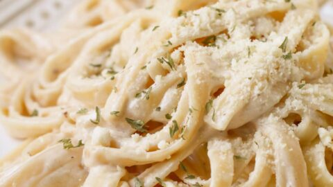

Authentic Fettuccine Alfredo

Description
I created this fettuccine Alfredo by modifying my grand-mother's recipe.
I get nothing but compliments when I make this dish.
My girlfriend addores it, and she scrapes the pan every time.
I must warn you, this recipe is not for the health-conscious!
Ingredients
- Pasta: Of course, you’ll need fettuccine pasta.
- Butter: This Alfredo sauce starts with two sticks of butter.
- Cream: The rich sauce calls for almost a cup of heavy cream.
- Seasonings: The fettuccine Alfredo is simply seasoned with salt, pepper, and garlic salt.
- Cheese: You’ll need Romano and Parmesan cheeses.
Steps
- Cook the pasta.
- Melt the butter and cream together on the stove, season, and stir in the cheese.
- Toss the pasta in the cheese sauce.